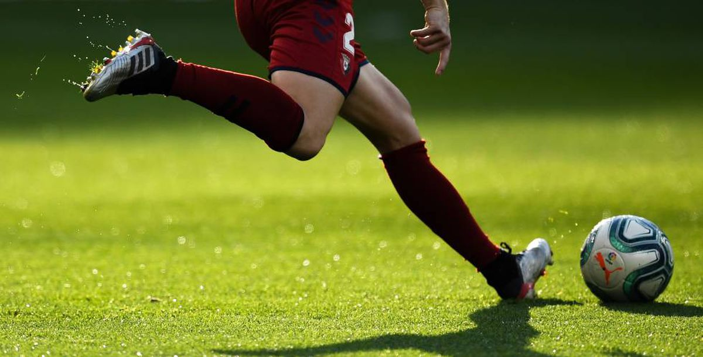
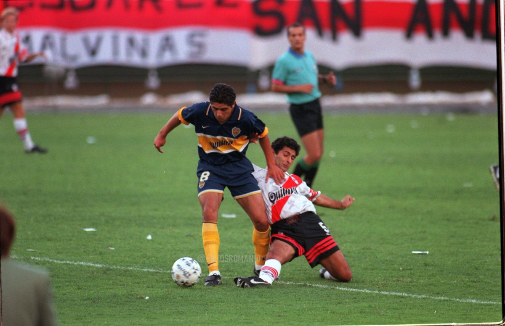

Todo
lo
necesario
para
poder
disfrutar
del
deporte
mas
'

Encuentre las canchas
Encuentre las canchas
que mas cerca le queden
Podra encontrar canchas
cerca de su ubicacion
en todo el pais
de el tamaño que desee 5, 7, 9, 11

Encuentre rivales para jugar un partido
Puede buscar otros equipos
para jugar partidos
en una ubicacion
que quede comoda
para los dos equipos

Encuentre un equipo para jugar
Podra buscar equipos
en los que falte un jugador
para asi sumarse